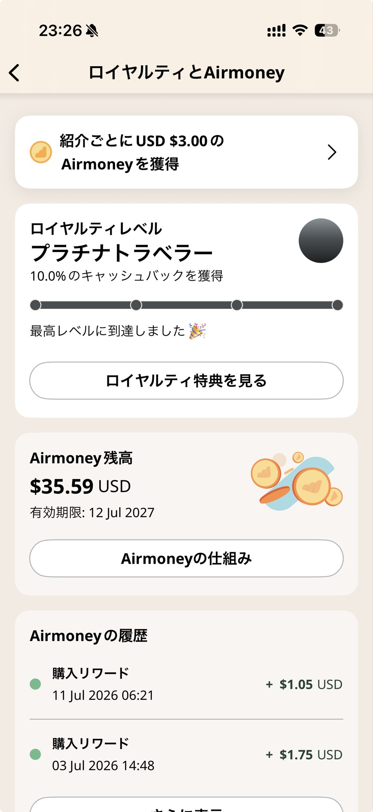
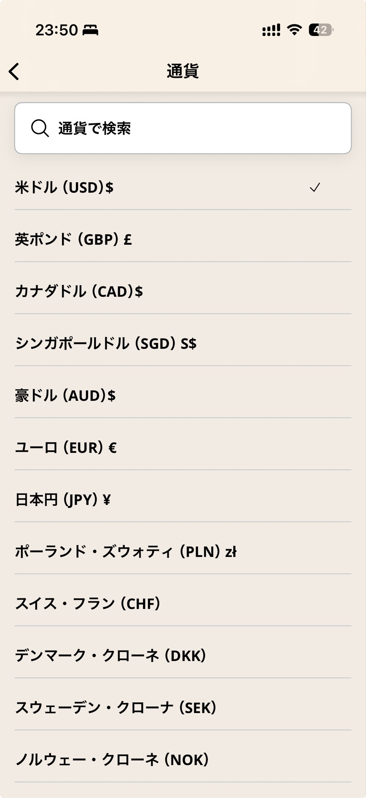

物理SIM・WiFiルーターをやめた理由
以前は、海外に行くたびにAmazonなどで現地用のSIMカードを買っていました。 ただ、これがいろいろと面倒でした。容量や期間に上限があり、現地に着いてから物理的にSIMを差し替える必要があります。 差し替えの最中に小さなSIMを落とす、あるいは元のSIMをどこかに置き忘れるリスクも常につきまといます。
もう一つの選択肢が、いわゆるレンタルWiFiルーターです。こちらも個人的には好みではありません。 本体は電源を入れっぱなしにしておきたいのに、バッテリー管理が要ります。 電源が落ちると、本体が再接続するまでスマートフォンとのテザリングが切れます。 海外でもLINEはつながっていてほしいですし、仕事であればTeamsやSlackで常時連絡が取れることが前提になっています。 気づかないうちにテザリングが切れている、という状態は避けたいところでした。
Airaloを選ぶ基準
eSIMを提供している会社は他にもあります。たとえばUbigiも使ったことがありますが、UIの使いやすさという点ではAiraloのほうが好みです。 アプリの操作が直感的で、プラン選びから購入、設定まで迷う場面が少ないと感じています。
当然、つながらなければ意味がありません。以前の海外出張で、同行者が使っていた別のeSIMは電波が入らないと話していましたが、 自分のAiraloはそのときも問題なく通信できていました。 それ以来、行くたびにAiraloを使うようになり、購入実績が積み重なって上位のトラベラーランクになっています。

家族・同行者との共有
娘がオーストラリアへ修学旅行に行った際は、自分のアカウントでeSIMを購入し、そのQRコードをアプリ未インストールの娘のスマートフォンに読み込ませるだけで設定が終わりました。 出張中に同行者のデータ容量が足りなくなった場合も、代わりに購入してQRコードを読み込んでもらえば済みます。 アプリのインストールや会員登録をその場で待たせる必要がありません。
出発前にやっておくこと
Airaloは日本にいるうちにアクティベーションの手順まで進めておけます。 現地に着く前、あるいは日本にいる段階でオンにしておいても問題ありません。 期間のカウントは、現地で実際に通信を開始してから始まる仕組みだからです。 少なくとも自分が使ってきたリージョン・グローバルプランで、日本を含むものに当たったことはないので、 日本国内でオンにしても期間が無駄に消費されることはありませんでした。
- ローミングはオンにする。ここを忘れると現地で通信できません
- iPhoneはほとんど追加設定が要りません。モバイル通信の切り替えを許可しておくだけです
- Androidは端末によってAPNの設定が必要になる場合があります
プランの選び方
年に数回、海外へ行く前提であれば、グローバルで365日20GBのプランを1つ持っておくと使い回しが利きます。 乗り継ぎのタイミングだけそちらに切り替え、目的地に着いたら現地のローカルプランに戻す、という組み合わせです。 ローカルとグローバルを両方持っておく形が、自分にとってはしっくりきています。
容量の目安は、PCを接続するかどうかで大きく変わります。 出張先のホテルでWiFiにすら満足につながらないことも珍しくありません。 PCを接続しないなら1日1GBもあれば足りますが、PCを接続するとなると、それでは足りないことが多く、無制限プランを選ぶことが多いです。
通貨を選んで安く買う
Airaloは購入時の通貨を選べます。同じプランでも、表示する通貨によって実質の価格が変わることがあるので、 いくつか通貨を切り替えて比較すると、案外安く買える通貨が見つかることがあります。

使った国・地域
これまでに購入した国・地域は次の通りです。
- 🌐 グローバル
- 🇪🇺 ヨーロッパ(リージョン)
- 🌏 アジア(リージョン)
- 🇦🇺 オーストラリア
- 🇦🇹 オーストリア
- 🇺🇸 米国
- 🇩🇪 ドイツ
- 🇨🇳 中国
- 🇸🇪 スウェーデン
- 🇬🇧 イギリス
- 🇸🇬 シンガポール
物理SIMの差し替えや紛失リスク、WiFiルーターの電池管理とテザリング切れ。 どちらの悩みも、eSIMに切り替えてからはほぼなくなりました。 出張・旅行のたびに通信のことで気を揉む必要がなくなった、というのが一番の変化です。